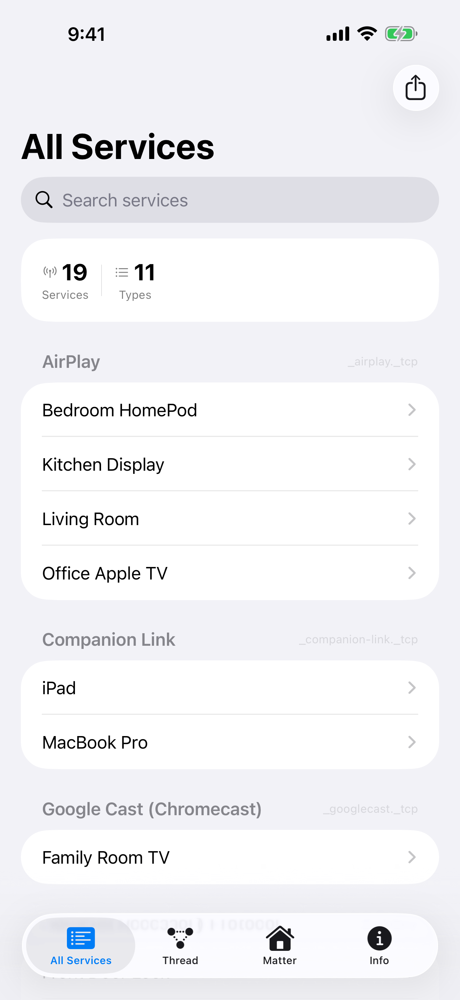
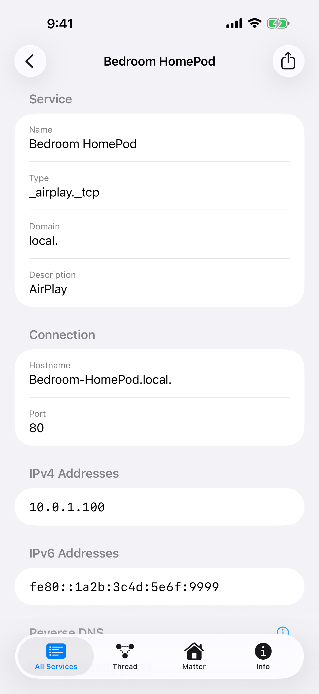
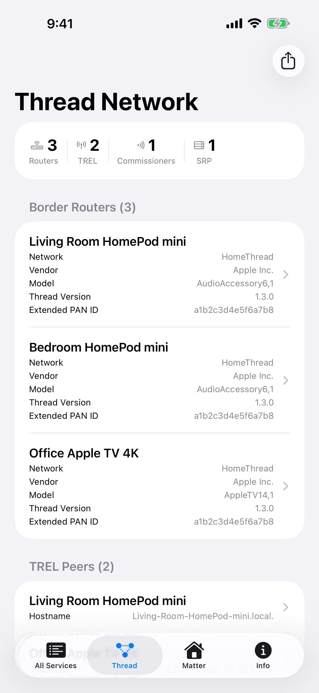
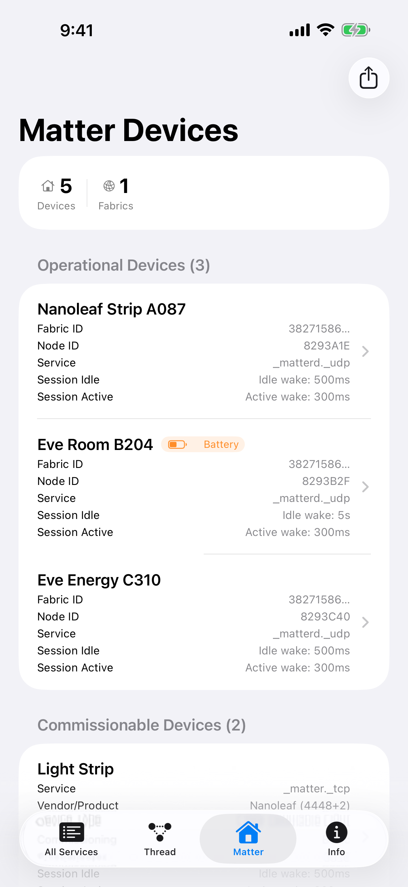
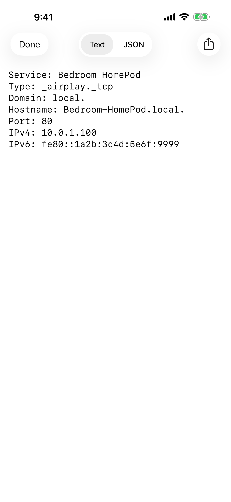

Herald discovers and inspects every Bonjour service, Thread border router, and Matter device — instantly from your iPhone.

Browse 45+ Bonjour service types — HTTP, SSH, AirPlay, HomeKit, printers, and more — in a single searchable list with live-updating service counts.
Discover Thread Border Routers, TREL peers, SRP servers, and Matter commissioners with decoded metadata — network name, vendor, model, and Thread version.
Find Matter-compatible smart home devices with vendor lookup, device type, commissioning mode, and discriminator details.
Tap any service to see its hostname, port, IPv4/IPv6 addresses, and parsed TXT records with human-readable labels.
Search across service names, types, and TXT record values to find what you're looking for instantly.
Export discovered services as JSON or text files for documentation, debugging, or sharing with your team.

Service Detail
Thread Network
Matter Devices
Text ExportHerald uses Apple's low-level dns_sd C API for direct communication with mDNSResponder, providing real-time Bonjour discovery without framework restrictions.
Herald is free and open source under the MIT License. No account required, no data collection — everything runs locally on your device.